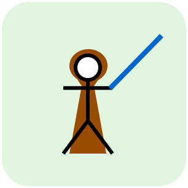

„Tue es oder tue es nicht. Es gibt kein Versuchen.”
– Master Yodler
Stolpersteine bei Pact zwischen Teams
Pact-Tests werden nicht geschrieben (keine Zeit dafür)
Pact-Tests in der Definition of Done aufnehmen
Pact-Tests im Abnahme-Prozess von User-Stories integrieren
Consumer-Tests werden geschrieben, Provider-Tests werden vernachlässigt
Prozesslösung – erfordert hohes Pact-Bewusstsein und Commitment im Projekt (auch von Product
Owner und Management)
Durchsetzen über Pipeline – Consumer-Branch kann nicht gemerged werden bis er vom Provider
verifiziert wurde
Fehlgeschlagene Verifizierungen werden ignoriert
Prozesslösung – Erfordert hohes Pact-Bewusstsein und
Commitment im Projekt (auch von Product Owner und Management)
Durchsetzen über Pipeline – "can-i-deploy" verwenden, Deployments nur bei erfolgreiche
Verifizierung
Provider-Teams werden durch Consumer-Änderungen blockiert
Pipeline läuft nicht mehr durch weil Consumer-Änderungen eine erfolgreiche Verifizierung
verhindern, Provider-Team ist blockiert bis die Problematik gelöst ist (inkl. Abstimmung mit
Consumer-Team, etc.)
Lösung über Pending-Pacts Feature vom Pact-Broker: neue, nie verifizierte Pact-Versionen
brechen den Provider-Build nicht (Verifizierung wird trotzdem als fehlgeschlagen publiziert)
WICHTIG: Miteinander REDEN ist weiterhin erforderlich!

„Nun, wenn Droiden denken könnten, wäre keiner von uns hier”